One configurable document layout for every PDF report: choose what the header shows, how it is formatted and where it sits on the page, per report and per company.
Odoo 20.0 Reporting PDF LayoutStandard Odoo layouts print a fixed address block and leave every other detail to the report template. This module adds the IBase document layout and a Configure Report record for each PDF report. On it you pick which address and document fields appear in the header, their labels and widths, which parts are bold, how many copies to print, the QR code and signature boxes in the footer, and the vertical position of the header body. The settings are stored per report and per company and apply to every document printed with that report.
Print any partner or company address of the record, with the country format or
your own, such as %(street)s, %(partner_name)s or
%(vat)s.
Show any field of the record, or a field of a related record, with a default value when it is empty.
Make the label, the value or both bold on each address and document line, independently.
Move Address and Document Details up or down in millimetres and add space before the items table. The logo, company address and title stay in place.
Print the original and any number of copies in one PDF, each with its own label and title.
Add a QR code with the portal link, document link or number, and signature boxes with the date and the company stamp. Move the signatures up or down and print the label above or below the signature.
Print in the user's language, the report's language or a fixed one, with custom date formats and the Buddhist Era year.
Choose the columns of the items table: any field of the line or of its product, with width, alignment and wrapping. Sections and notes keep their own rows.
Choose the lines below the items table: amounts of the document, taxes per group and the payments reconciled with an invoice, each bold, hidden or hidden at zero.
Page margins grow with the number of header lines and the footer content, so the items table never runs under the header.
| 1 | Turn on the IBase layout for the company in Settings > General Settings > Configure Document Layout. |
| 2 | Create one Configure Report record per PDF report and company. |
| 3 | Fill in the Header, Footer and Other Options tabs, then save. |
| 4 | Print the document as usual. The settings are applied to every PDF of that report. |
Go to Settings > Configure Report. The list shows one record per report and company. Click a record to change it, or New to configure another report.
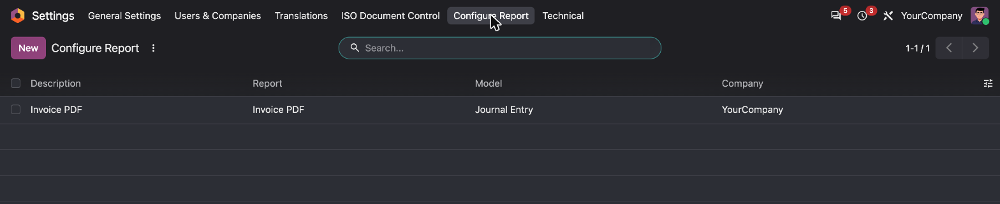
Pick the Report to configure. Only QWeb PDF reports without their own paper format are listed. Name is filled from the report and Model shows which documents it prints. A report can be configured once per company.
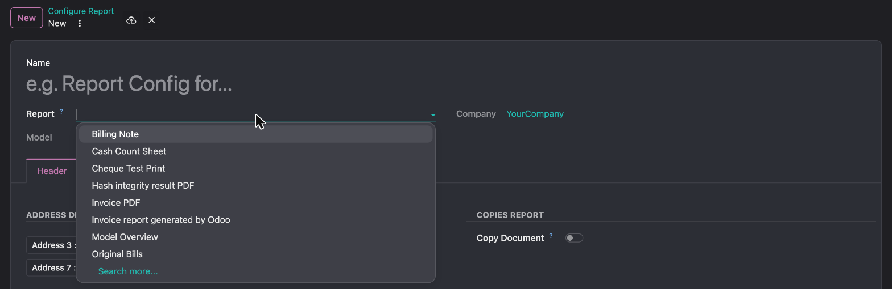
Address Details: Ratio splits the 12 columns of the page between the address (left) and the document details box (right). Address 6 : Details 6 gives each half. Turn on Specific Title to print your own document title instead of the report's.
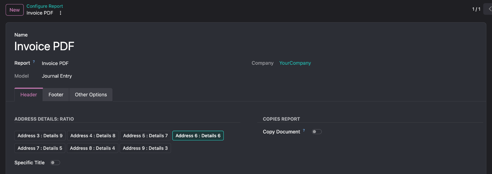
Turn on Copy Document and set Number of Copies. The PDF then holds the original plus that many copies. Origin Label and Copy Label are printed above the title of each page. The lines below let you rename each page and choose whether its label is bold.
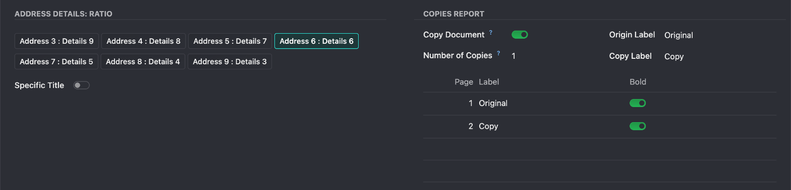
The body is the Address and Document Details block under the logo. Vertical Offset (mm) moves it: negative up, positive down, decimals allowed. Gap Before Items (mm) adds space between the body and the items table, 0 keeps the default spacing. The arrows change a value by 1 mm and each Reset sets its value back to 0. The items table moves with the body; the logo, company address and title stay where they are.
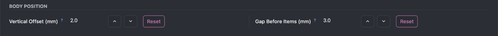
Each line prints one address. Label is the text on the left and Field is the partner or company of the document to read the address from. Turn on Custom Format to write the layout yourself in Layout in Reports; otherwise the country format is used. Label Bold and Value Bold make each part bold separately, and Text Wrap lets long text break onto the next line. Drag the handle to reorder the lines.
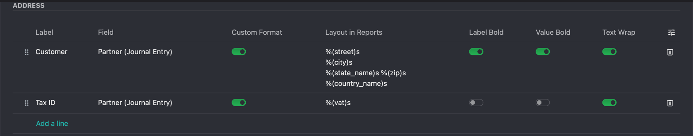
Under the lists, the legend shows every placeholder you can use in
Layout in Reports, for example %(street)s,
%(partner_name)s or %(vat)s for the Tax ID. An empty value
prints nothing, and unknown placeholders are removed.
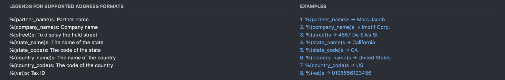
These lines fill the box on the right. Pick the Field of the document; click > next to a relation to print one of its fields, e.g. Salesperson > Name. A relation alone prints its name and dates follow the report date format. Default Value is printed when the field is empty. Label Bold and Value Bold work as on the address lines.
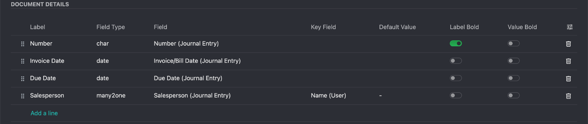
Turn on Show QR Code and choose what it encodes: the portal link, the document number or the document link. QR Label is printed above it.
Under Signature, Vertical Offset (mm) moves every signature box together: negative up, positive down, decimals allowed. The arrows change it by 1 mm and Reset sets it back to 0. The page number stays where it is.
Each line adds one signature box. Label is its title and Label Position prints it above (Top, the default) or below (Bottom) the signature. Bottom Label is printed under the signature in front of the date, for example Date: [Sign Date]; leave it empty to hide it. Sign Date picks the date from the document; without a date, a dotted line is left to write it by hand. Company Stamp adds the company stamp.
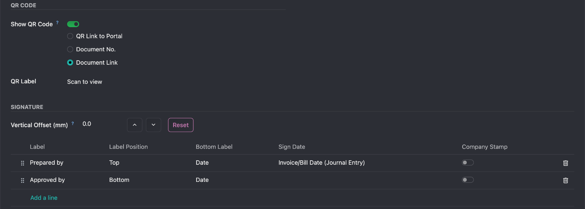
With the settings above, Prepared by keeps its label on top and prints Date: with the invoice date. Approved by prints its label under the signature area and leaves the date to fill in.
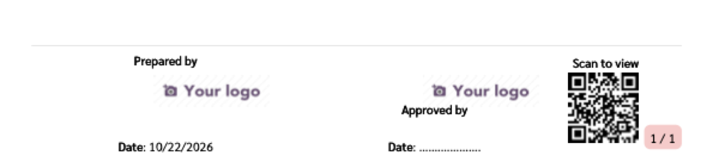
Report Lang Options prints in the report's language, the user's language or a fixed one. Turn on Locale Date to control how dates are printed: Buddhist Era converts the year, Show Time Format adds the time, and Format Options takes the format from the user, the partner or the Date Format you type, using the codes in the legend.
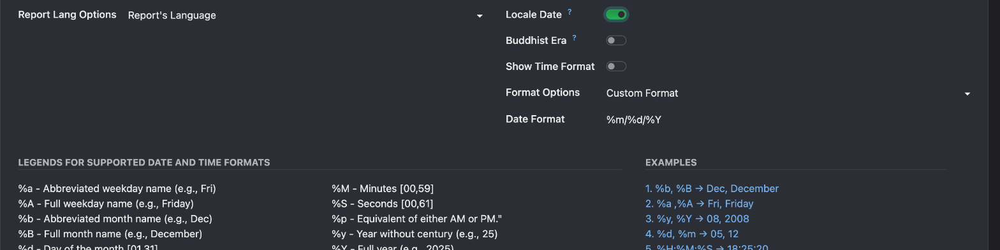
On the Table Columns tab, turn on Custom Table Columns to replace the items table of the report with your own columns. The totals below the table are set on the Totals tab.
With Line Source set to Field, pick the Line Field holding the lines, e.g. Invoice lines or Order Lines, and optionally a Line Filter to leave some lines out. Lines are printed in their document order.
Python Code is for administrators only. Choose the Line
Model and set result to the lines to print; doc is
the printed record and env the environment, for example
result = doc.order_line.filtered(lambda line: line.product_uom_qty). The
result must be records of the Line Model, otherwise printing stops with an error.
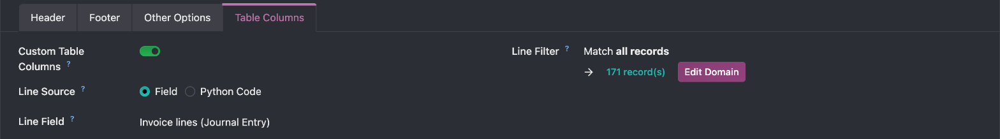
Load Default Columns fills the usual columns of the line model (description, quantity, unit price, taxes, amount). Add a line adds a column: type the Label and pick the Field; click > next to a relation to go deeper, e.g. Product > Internal Reference or Product > Barcode. Set the Width (%), the Header Alignment and Value Alignment separately (e.g. a centred header over left-aligned descriptions) and Text Wrap, hide a column with Visible and drag the handle to reorder. The widths of the visible columns must add up to 100%, shown in Total Width.
Turn on Show Row Number to add a first column numbering the lines 1, 2, 3… and set its header in Row Number Column Title (No. by default, e.g. ลำดับ or #). Sections and notes are not numbered. The numbers run on across pages and start again at 1 for each document and each copy; turn the option off to remove the column.
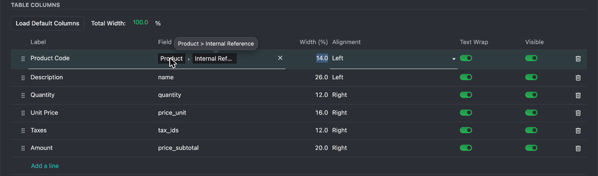
Each value is formatted like its field: amounts with the currency, numbers with their precision, dates in the report language, relations by name. Empty values print nothing. Section lines span the whole table in bold and notes in italics. The same table is used in the HTML preview and in the PDF.
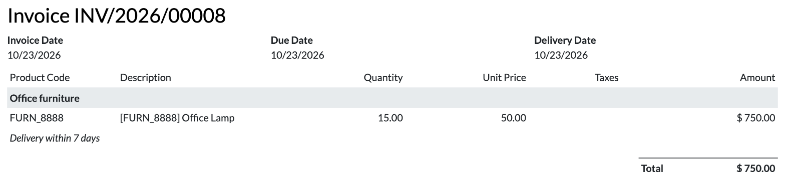
On the Totals tab, turn on Custom Totals to replace the totals below the items table with your own lines. Load Default Totals fills the usual lines of the report model: Untaxed Amount, Taxes, Total, Payments and Amount Due, keeping only those the model has.
Add a line adds a total: type the Label and choose the Source. Document Field prints one amount of the document; pick the Field among its amount and number fields, custom fields included. Tax Summary prints one line per tax group, e.g. VAT 7%. Payments prints one line per payment reconciled with the invoice, with its date; outstanding credits not yet reconciled are not deducted. Turn on Bold, hide a line with Visible or only when its amount is zero with Hide When Zero, and drag the handle to reorder.
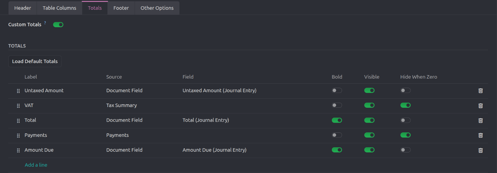
Amounts are right-aligned in the currency and decimals of the document. The values are read from the document only, nothing is recomputed in accounting. The same totals are used in the HTML preview and in the PDF. Here the invoice is partly paid: the payment line shows its date and the amount due what is left.
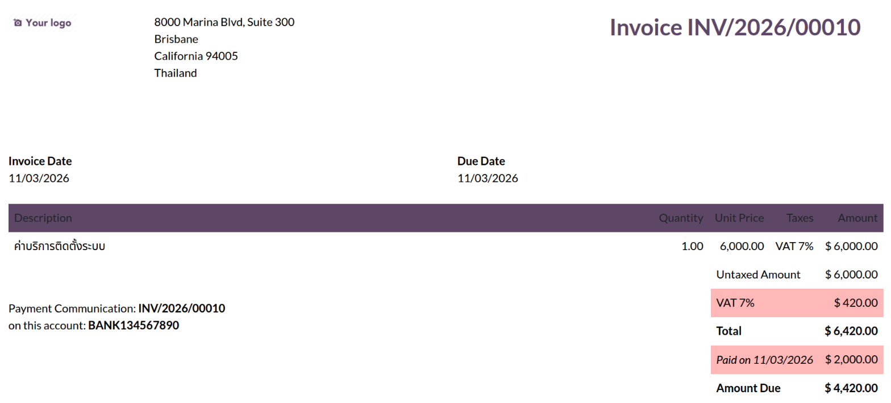
Save the record and print the document. Here the customer address has a bold label and value, the Tax ID line is regular, the document details box shows the number in bold, and the footer carries both signature boxes and the QR code.
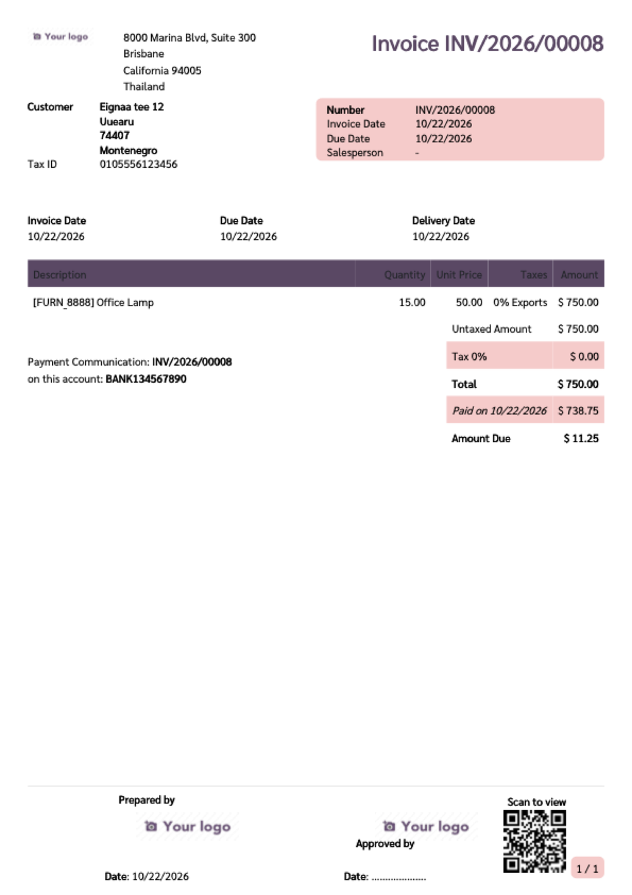
%(vat)s placeholder in address formats